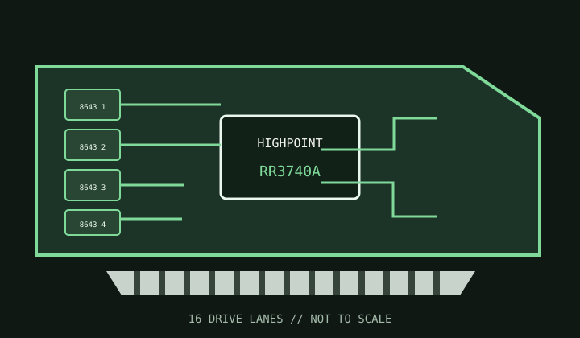

[ INDIVIDUAL COMPONENT // STORAGE / DISK I/O ]
HighPoint RocketRAID 3740A
A sixteen-drive SAS/SATA hardware RAID adapter with four internal Mini-SAS HD connectors.

MODEL SCOPE: RocketRAID 3740A, now an end-of-life product. Confirm board revision and legacy driver availability before relying on this adapter.
Reference specifications
| Controller | HighPoint RocketRAID 3700-series SAS/SATA RAID controller. |
|---|---|
| Host bus | PCI Express 3.0 x8. |
| Ports | Sixteen internal lanes on four SFF-8643 Mini-SAS HD connectors; each connector carries up to four drive lanes. |
| Protocols | SAS up to 12 Gb/s and SATA up to 6 Gb/s. |
| RAID / HBA mode | Hardware RAID 0, 1, 5, 6, 10 and 50 with JBOD/raw modes supported by the product software. |
| Cache / protection | 2 GB onboard DDR3 cache. The EOL record does not establish that a BBU is included; verify the exact board and supported cache-protection accessory, and avoid unprotected write-back. |
| Firmware / OS | Requires HighPoint RocketRAID 3740A firmware and a driver/management package compatible with the exact Windows, Linux or other supported OS release. Current status is EOL and HighPoint warns that EOL software is no longer tested. |
| Drive / backplane caveats | Use SFF-8643 breakout cables with the correct SAS/SATA connector and drive-power wiring. Validate 512n/512e/4Kn support, expander behavior and backplane cabling against the legacy manual. |
Compatibility and service notes
- HighPoint marks the driver/software offering end-of-life; test installation on the intended OS before purchasing or deploying.
- Confirm any cache backup module against the exact board revision rather than assuming a 3700-series accessory is compatible.
- Maintain a controller configuration export and independent backup; legacy array metadata may not import to a different RAID family.
Sources & further reading
- HighPoint — RocketRAID 3740A software and manualsManufacturer's EOL downloads page; HighPoint notes EOL updates are no longer tested.
- HighPoint — RR3740A/RR3720 quick installation guideOfficial series installation document for adapter fitting and hardware connections.
- HighPoint — SAS/SATA product matrixManufacturer product-family reference for controller feature distinctions.